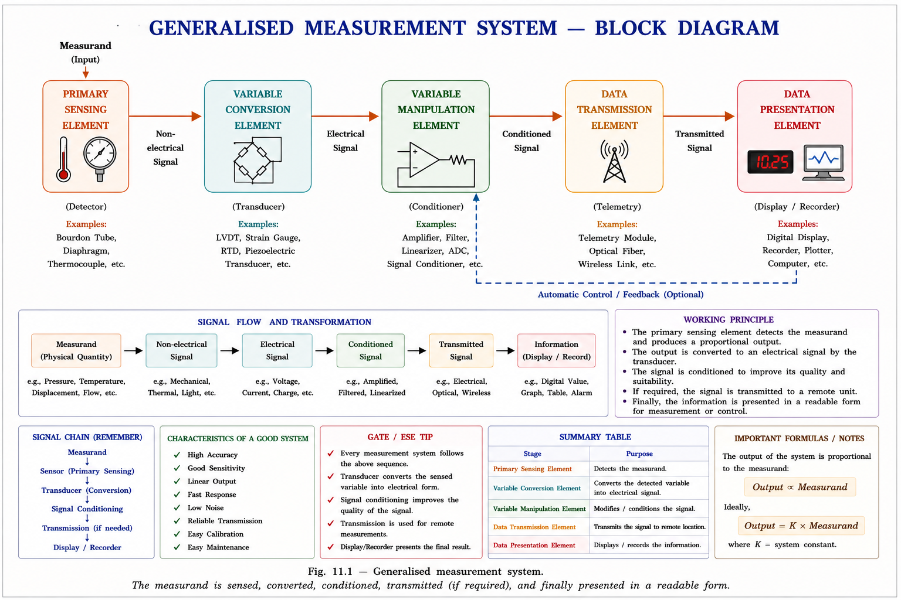
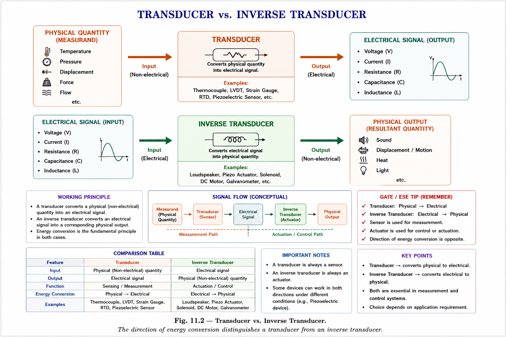
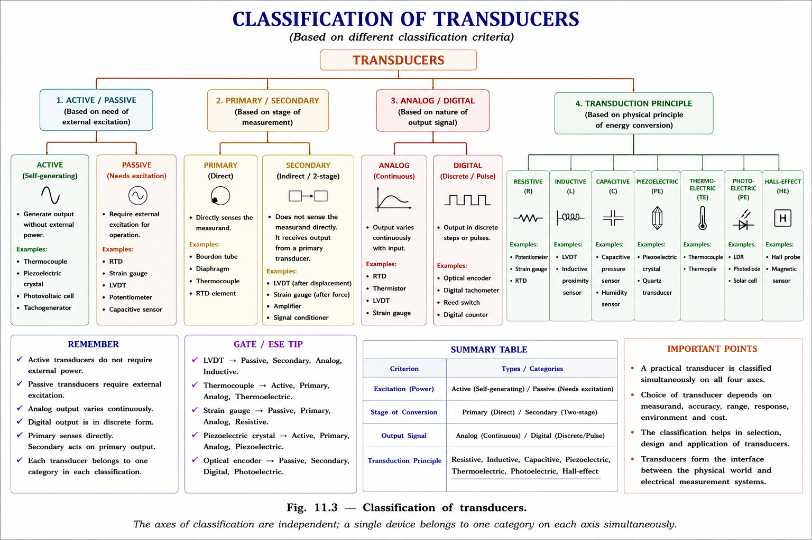
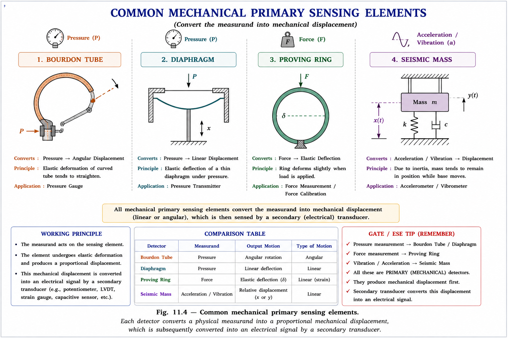
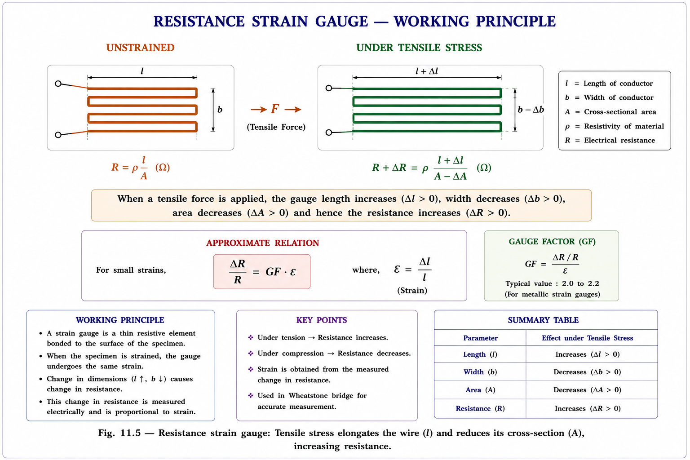
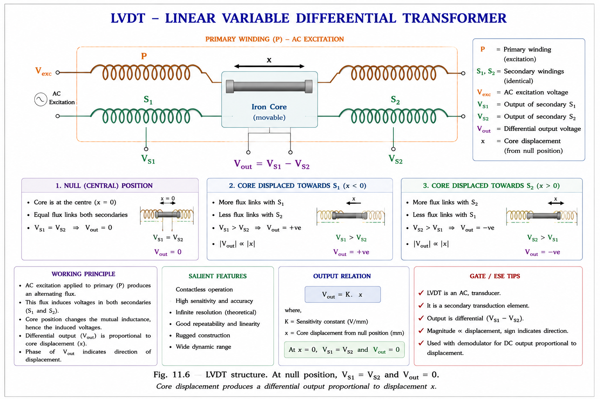
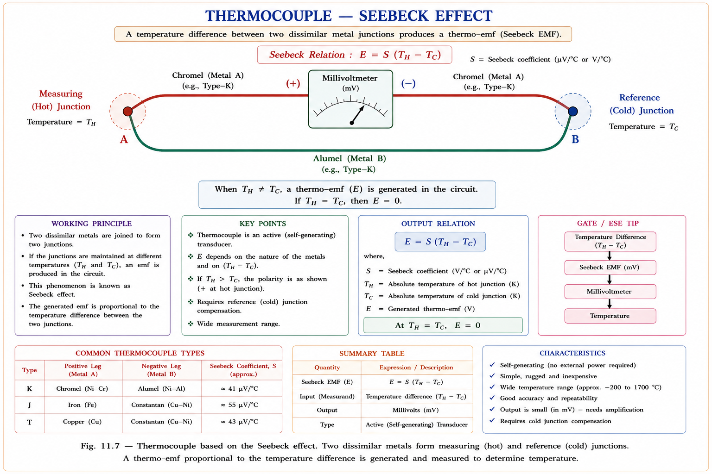

From a generalised measurement system to classification, characteristics, and selection criteria — a complete conceptual and mathematical treatment for GATE, IES, and PSU examinations, derived from standard textbooks.
Every branch of engineering is ultimately about controlling physical quantities — temperature in a furnace, pressure in a pipeline, speed of a motor, displacement of a mechanical arm. But before you can control anything, you must first measure it. Measurement is the bridge between the physical world and the engineer's decision-making system.
An instrument is formally defined as a device or system designed to maintain a prescribed functional relationship between a physical variable under observation and a standardised output quantity, while simultaneously providing a means of communication to a human observer.[1]
Think of a thermocouple in a blast furnace: the furnace temperature (a physical phenomenon) is converted into a millivolt signal (an electrical quantity), which is displayed on a panel meter. Each stage — sensing, conversion, display — is a distinct functional element of the measurement system.
The transformation of a physical quantity into a proportional electrical signal is preferred because electrical signals can be easily amplified, transmitted over long distances, processed digitally, and stored. Modern SCADA and DCS systems in power plants, refineries, and smart grids all depend on this principle.
Doebelin (2004) proposed the concept of a Generalised Measurement System — a universal functional model that describes every measuring instrument, regardless of the physical quantity being measured.[1] The system has five functional stages:

| Stage | Function | Physical Example | Electrical Example |
|---|---|---|---|
| Primary Sensing Element | Makes first contact with the measurand. Detects the physical quantity. | Bourdon tube senses pressure | Thermocouple junction senses temperature |
| Variable Conversion Element | Converts the output of the primary element into a different physical form. | Bourdon tube displacement → rack-and-pinion angle | Thermocouple mV → amplified voltage |
| Variable Manipulation Element | Operates on the signal preserving its original information content (amplification, filtering). | Mechanical linkage magnification | Op-amp instrumentation amplifier |
| Data Transmission Element | Transmits the conditioned signal to the next stage, often over a distance. | Shaft and pointer linkage | 4–20 mA current loop, RS-485 bus |
| Data Presentation Element | Conveys the information to a human observer or a data acquisition system. | Dial gauge pointer + scale | Digital display, data logger, SCADA HMI |
The ideal measurement system derives no energy from the measurand itself. Energy for detection and conversion is supplied by an external auxiliary source. This prevents the act of measurement from disturbing the quantity being measured — known as the loading effect. (Ref: Bentley, 2005, §1.3)
In most industrial measurement systems, the physical quantity to be measured is a non-electrical quantity — pressure, temperature, force, displacement, velocity, light intensity. To exploit the advantages of electrical processing, this non-electrical quantity must be converted into a proportional electrical signal. The device that accomplishes this conversion is called a transducer.[2]
A transducer is a device that transforms energy from one form to another. In instrumentation, it specifically refers to a device that converts a non-electrical physical quantity into a proportional electrical signal (voltage, current, resistance, capacitance, or inductance).
The word transducer comes from the Latin transducere — "to lead across." It is also called a pick-up or a sensor in common usage, though strictly a sensor refers only to the primary sensing element, while a transducer includes the signal conditioning stage.
An inverse transducer converts an electrical signal into a non-electrical physical quantity. Examples include a loudspeaker (electrical → sound), a galvanometer (current → angular displacement), and a piezoelectric actuator (voltage → mechanical force). These are essential in feedback control systems and electromechanical actuators.[3]

Transducers are classified along several independent axes. Understanding why each classification exists is more important than memorising the categories, because GATE questions often test conceptual understanding of which class a device belongs to and why.[2]

This is the most frequently tested classification in GATE and IES.
| Property | Active (Self-Generating) | Passive (Externally Powered) |
|---|---|---|
| Power source | Derives power from the measurand itself | Requires auxiliary excitation (DC/AC supply) |
| Output form | Generates own voltage or current | Changes R, L, or C value |
| Examples | Thermocouple, Piezoelectric, Photovoltaic, Moving-coil generator | Strain gauge (resistance), LVDT (inductance), Capacitive pressure gauge |
| Signal conditioning | Simpler (voltage amplifier) | More complex (bridge circuit + amplifier) |
| Loading effect | Higher (measurand supplies energy) | Lower (auxiliary source supplies energy) |
A photovoltaic cell is an active transducer — it generates its own voltage from incident light. A photoconductive cell (LDR) is a passive transducer — it only changes its resistance; it needs an external supply to produce a measurable current. Don't confuse them.
Some measurements require a two-stage conversion. The device performing the first conversion (physical quantity → intermediate mechanical quantity) is the primary transducer. The device performing the second conversion (mechanical → electrical) is the secondary transducer.
In a pressure measurement system: a Bourdon tube converts pressure → displacement (primary transducer). An LVDT bonded to the Bourdon tube then converts displacement → AC voltage (secondary transducer). The output is thus a voltage proportional to the original pressure.
Analog transducers produce a continuous output that varies smoothly with the measurand (e.g. LVDT voltage is a continuous function of displacement). Digital transducers produce an output in the form of discrete pulses or a binary code (e.g. an optical encoder produces a train of pulses proportional to angular position).
Before the signal reaches the electrical transduction element, many instruments use a mechanical primary detector to convert the original measurand into an intermediate displacement. These are the "muscle" of the measurement system.[1]

| Category | Device | Conversion |
|---|---|---|
| Elastic Members | Bourdon tube | Pressure → displacement |
| Bellows / Diaphragm | Pressure → displacement | |
| Proving ring / Spring | Force → displacement | |
| Mass Elements | Seismic mass | Acceleration/vibration → displacement |
| Manometer liquid column | Pressure → displacement (liquid height) | |
| Thermal Elements | Thermocouple junction | Temperature → EMF (electrical, not mechanical) |
| Bimetallic strip | Temperature → displacement (bending) | |
| Hydropneumatic | Orifice / Venturi | Fluid velocity → differential pressure |
| Float | Liquid level → displacement |
Passive transducers require an external excitation to produce an output signal. They work by causing a change in an electrical parameter (R, L, or C) in response to the measurand. This change is then detected, typically using a Wheatstone bridge or an AC bridge circuit.[2]

The sensitivity of a strain gauge is characterised by its Gauge Factor (GF), defined as the fractional change in resistance per unit strain:
where \(\nu\) is the Poisson's ratio of the conductor material, \(\varepsilon = \Delta L/L\) is the longitudinal strain, \(\Delta\rho/\rho\) is the piezoresistive component. For most metallic gauges \(GF \approx 2\); for semiconductor (silicon) gauges \(GF\) can reach 100–170.[2]
| Parameter | RTD (Resistance Thermometer) | Thermistor (NTC) |
|---|---|---|
| Material | Pure metals (Pt, Ni, Cu) | Metal oxides (Mn, Co, Ni oxides) |
| TCR | Positive (R increases with T) | Negative (R decreases with T — NTC) |
| Relationship | \(R_T = R_0(1 + \alpha T)\) | \(R = A\,e^{B/T}\) (exponential) |
| Linearity | High (good linearity) | Highly non-linear |
| Range | –200°C to +850°C | –50°C to +300°C |
| Sensitivity | Lower (Pt100: 0.385 Ω/°C) | Higher (more sensitive) |
| Application | Industrial precision thermometry | Temperature compensation, flow sensing |
The Linear Variable Differential Transformer (LVDT) is the most widely used inductive displacement transducer. It operates on the principle of mutual inductance variation as a ferromagnetic core moves within a transformer winding arrangement.

where \(K\) is the LVDT sensitivity (V/mm) and \(x\) is the core displacement from the null position. The output is linear over the operating range, and the phase of V_out (relative to V_exc) indicates the direction of displacement — a key advantage over simple resistive sensors.[1]
Capacitive transducers exploit the relationship between capacitance and the geometry of a parallel-plate capacitor:
Three parameters can be varied by the measurand: (1) the plate separation \(d\) — used in pressure and displacement gauges; (2) the effective plate area \(A\) — used in angular displacement sensors; (3) the dielectric constant \(\varepsilon_r\) — used in level and moisture sensors. A decrease in \(d\) increases \(C\) non-linearly, so capacitive sensors used for displacement often employ differential configurations to achieve linearity.
These transducers generate their own EMF or current in response to the measurand, without requiring an external excitation supply.[3]
When two dissimilar metals are joined at two junctions and the junctions are maintained at different temperatures, an EMF is generated in the circuit. This is the Seebeck Effect, the working principle of the thermocouple.

where \(\alpha_{AB}\) is the Seebeck coefficient (or thermoelectric sensitivity) in \(\mu V/°C\) for the metal pair A–B. For a Type K thermocouple (Chromel–Alumel), \(\alpha \approx 41\,\mu V/°C\). Common GATE-relevant thermocouple types are Type J (Fe–Constantan), Type K (Chromel–Alumel), and Type T (Cu–Constantan).[2]
Certain crystalline materials — quartz, Rochelle salt, barium titanate — develop an electric charge across their faces when subjected to mechanical stress. This is the direct piezoelectric effect. The charge is proportional to the applied force:
where \(d\) is the piezoelectric charge sensitivity (C/N), \(F\) is the applied force, and \(C_T\) is the total capacitance (crystal + cable + amplifier input). Because the crystal is essentially a capacitor, the charge leaks away at low frequencies — piezoelectric sensors are therefore suited to dynamic measurements (vibration, shock, blast pressure) rather than static measurements.[1]
A photovoltaic cell generates a voltage when photons strike its P-N junction, generating electron-hole pairs and creating a potential difference. This is a classic active transducer — it produces its own voltage directly from light energy. The open-circuit voltage is approximately 0.5–0.7 V for a silicon cell.[3]
Choosing or evaluating a transducer requires understanding its performance specifications. These characteristics are broadly categorised as input, transfer, and output characteristics.[1]
| Category | Characteristic | Definition & Significance |
|---|---|---|
| Input Characteristics | Operating range / Span | The range of measurand values over which the transducer operates correctly. Operating beyond the range causes non-linearity or damage. |
| Loading effect | Perturbation caused by the measurement process on the measurand. Minimum loading is desirable. | |
| Transfer Characteristics | Sensitivity | The ratio of output change to input change: \( S = \Delta V_{out}/\Delta x \). Higher sensitivity → more detectable output for a small input change. |
| Linearity | The degree to which the input-output relationship follows a straight line over the operating range. | |
| Resolution | The smallest detectable change in the measurand. In digital transducers, resolution = full scale / 2ⁿ. | |
| Transfer Characteristics (contd.) | Accuracy | Closeness of the output to the true value of the measurand. |
| Hysteresis | Difference in output for the same input during upscale vs. downscale traversal. Caused by friction, backlash, or magnetic hysteresis. | |
| Repeatability / Reproducibility | Ability to produce the same output for the same input under identical conditions. | |
| Output Characteristics | Output impedance | Determines how much the output is loaded by the measuring circuit. A low output impedance is preferred for voltage outputs. |
| Frequency / Dynamic response | How fast the transducer responds to a step change in measurand. Characterised by natural frequency, damping ratio, time constant. | |
| Environmental | Cross-sensitivity, stability, drift | Sensitivity to unwanted inputs (temperature, humidity, vibration). Drift is the change in zero or sensitivity over time. |
Many students confuse sensitivity with resolution. Sensitivity is the slope of the input-output curve (output change per unit input change). Resolution is the smallest detectable input change — limited by noise floor. A highly sensitive transducer does not necessarily have high resolution if its noise floor is also high.
When the output impedance of a transducer \(Z_{out}\) is much less than the load impedance \(Z_L\), the transducer behaves as a constant voltage source:
Selecting the right transducer for an application is an engineering decision, not a lookup exercise. The following factors must be systematically evaluated.[2]
| Selection Factor | Question to Ask | Impact |
|---|---|---|
| Operating Principle | What physical effect is most directly related to the measurand? | Determines type (R, L, C, piezo…) |
| Operating Range | What are the minimum and maximum values of the measurand? | Rules out under-ranged or over-ranged devices |
| Sensitivity | What output change is needed per unit input change? | Affects signal-to-noise ratio |
| Accuracy & Resolution | What measurement uncertainty is acceptable? | Determines specification tier |
| Environmental Conditions | What are the ambient temperature, humidity, vibration levels? | Affects choice of housing, material, compensation |
| Cross-Sensitivity | Will the transducer respond to unwanted quantities? | May require shielding or correction |
| Loading Effect | Will the measurement disturb the measurand? | Critical for fragile or low-energy signals |
| Frequency Response | Is the measurand static, slowly varying, or dynamic (vibration)? | Determines need for high bandwidth |
Operating range, Range of measurand, Sensitivity, Accuracy, Cross-sensitivity, Conditions (environment), Electrical output type, Loading effect. Use this mnemonic in answer writing for IES descriptive questions.
Transducers are tested in GATE EE under Electrical and Electronic Measurements (approximately 2–4 marks per year). Key topics: active vs passive classification, LVDT output, gauge factor formula, thermocouple laws, transducer output impedance. IES descriptive questions often ask for comparison tables and principle explanations.
Explanation: A piezoelectric accelerometer generates its own charge (and hence voltage) in response to the applied force. LVDT, strain gauge, and capacitive gauge all require an external supply — they are passive transducers. The phrase "self-generating" is synonymous with "active."
Explanation: Since \(Z_{out} = 500\,\Omega \ll Z_L = 500\,k\Omega\), essentially all the open-circuit voltage appears across the load. The transducer behaves as a constant voltage source. If instead \(Z_{out} \gg Z_L\), it would behave as a constant current source.
Explanation: At the null (centre) position, the magnetic core links equally with both secondary windings S₁ and S₂. Since the secondaries are wound in opposition, V_S1 = V_S2, and the differential output V_out = V_S1 − V_S2 = 0. Residual voltage (due to imperfect winding) is a practical limitation, not an ideal characteristic.
| Topic | What to Know | GATE Probability |
|---|---|---|
| Active vs. Passive | Classification of any given transducer | 🟢 High |
| LVDT | Output at null, linearity, direction sensitivity | 🟢 High |
| Gauge Factor | Formula GF = (ΔR/R)/ε, typical values | 🟢 High |
| Thermocouple EMF | Seebeck effect, EMF formula, types | 🟢 High |
| Output impedance | Voltage vs. current source classification | 🟢 High |
| Piezoelectric sensor | Dynamic vs. static limitation | 🟡 Medium |
| RTD vs. Thermistor | PTC vs. NTC, linearity comparison | 🟡 Medium |
| Primary vs. Secondary | Two-stage conversion concept | 🔴 Low |
5 stages: Primary Sensing → Variable Conversion → Variable Manipulation → Data Transmission → Data Presentation. Energy from auxiliary source, not measurand.
Converts non-electrical quantity → electrical signal (\(V, I, R, L, C\)). Also called pick-up or sensor. Inverse transducer: electrical \(\rightarrow\) non-electrical.
Active: self-generating, no external supply. Examples: thermocouple, piezoelectric, photovoltaic. Passive: needs external excitation. Examples: strain gauge, LVDT, capacitive gauge.
\(GF = \frac{\Delta R / R}{\varepsilon}\). Metallic: \(GF \approx 2\). Semiconductor: \(GF \approx 100\text{--}170\). Higher \(GF \rightarrow\) more sensitive but often more temperature-sensitive too.
\(V_{out} = K \cdot x\). At null: \(V_{out} = 0\). Phase indicates direction. High linearity, friction-free, infinite resolution. Frequency range: DC to 20 kHz.
\(E = \alpha(T_H - T_C)\). Seebeck effect. Type K (Chromel–Alumel): \(\sim 41\,\mu\text{V}/^\circ\text{C}\). Active transducer. Needs cold-junction compensation for absolute temperature.
\(Q = d \cdot F\); \(V = Q/C_T\). Active transducer. Suitable for dynamic (AC) measurements only — charge leaks at low frequency. Materials: quartz, \(\text{BaTiO}_3\).
\(Z_{out} \ll Z_L \rightarrow\) constant voltage source. \(Z_{out} \gg Z_L \rightarrow\) constant current source. GATE frequently tests this for 1-mark direct questions.
RTD: PTC, linear, wider range (\(-200^\circ\text{C}\) to \(+850^\circ\text{C}\)). Thermistor: NTC, exponential, narrower range, higher sensitivity. \(R_T = R_0(1+\alpha T)\) for RTD.
1. For any transducer classification question: first ask "does it produce its own
voltage/current?" → Yes: Active. No: Passive.
2. LVDT is an inductive (not capacitive) transducer — it uses mutual inductance
variation.
3. Piezoelectric cannot measure static (DC) pressure — suitable only for dynamic, fast-changing
quantities.
4. The photovoltaic cell is active; the photoconductive cell (LDR) is passive.
5. Thermocouple EMF depends on temperature difference, not absolute temperature alone.
Type your question or pick a suggested prompt below. Aarova AI will answer with step-by-step explanations from standard textbooks.
Resistance Strain Gauge in depth — Wheatstone bridge circuit, lead wire compensation, temperature error correction, rosette strain gauges, and complete GATE and IES worked problems on bridge output calculation.
All technical content is derived exclusively from the following standard textbooks. All explanations, derivations, and diagrams are original to Aarova AI.